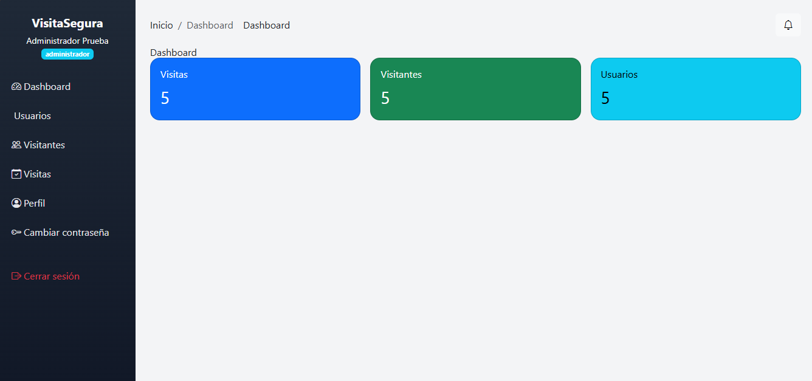

Visita Segura
Gestión segura de visitantes — JAM Corporation
PHP 8 MySQL/xampp Bootstrap 5 Tailwind (paneles)
Equipo: Juan Alejandro Ramírez · María del Mar Ramírez · Jeison David León · Año 2025 · Sede Cali
Problema y Objetivo
- Ingresos y salidas sin trazabilidad.
- Autorizaciones lentas y poco visibles.
- Reportes manuales y poco confiables.
Objetivo: digitalizar el control de visitas con seguridad, rapidez y evidencia.

Alcance Funcional
- Registro de visitantes (documento único).
- Autorización/Rechazo por empleado.
- Entrada/Salida con marcas de tiempo.
- Búsqueda y filtros por fecha, persona y estado.
- Notificaciones al empleado anfitrión.
- Reportes y exportación CSV.
Arquitectura y Tecnologías
- PHP 8 + Apache (XAMPP), PDO con MySQL.
- Ruteo propio, controladores MVC ligero.
- Bootstrap 5 y Tailwind en paneles.
- CSRF en mutaciones y RBAC por roles.
- Notificaciones en BD y toasts en UI.

Roles y Flujo
- Recepcionista: registra visitantes y crea visitas.
- Empleado: autoriza/rechaza y registra salida.
- Admin: gestiona usuarios, ve reportes y todo el historial.
Interacciones en modales, sin saltos de página. Redirecciones seguras.
Seguridad
- Protección CSRF en todas las acciones de escritura.
- Roles y permisos (RBAC) en controladores y vistas.
- Sesiones endurecidas y validaciones de entrada.
- Redirecciones referer-safe para evitar open redirects.
Interfaz

- UI con Bootstrap 5 + Icons.
- Toasts y notificaciones.
- CSV export y filtros rápidos.
Manual de Usuario y Técnico disponibles en /docs con opción PDF.
Resultados y Demo
- Paneles estables, sin redeclaraciones PHP.
- Flujos completos con modales y feedback.
- Documentación HTML + exportación a PDF.
- Sección Proyecto JAM integrada (visor y PDF).
Conclusiones
- Sistema listo para uso académico o empresarial y extensible.
- Base sólida de seguridad y mantenibilidad.
- Ruta clara para ampliaciones (correo SMTP, dashboards, etc.).
Repositorio local: c:/xampp/htdocs/visita-segura
Equipo
Juan Alejandro Ramírez · María del Mar Ramírez · Jeison David León
Ingeniería de Software III — 2025 · Corporación Uniremington — Sede Cali